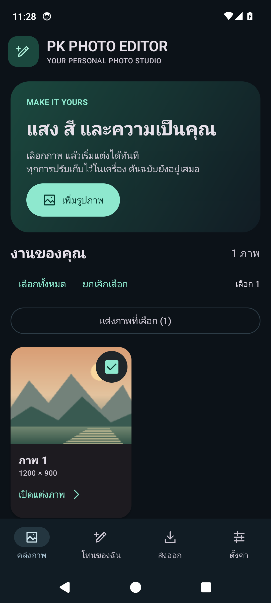
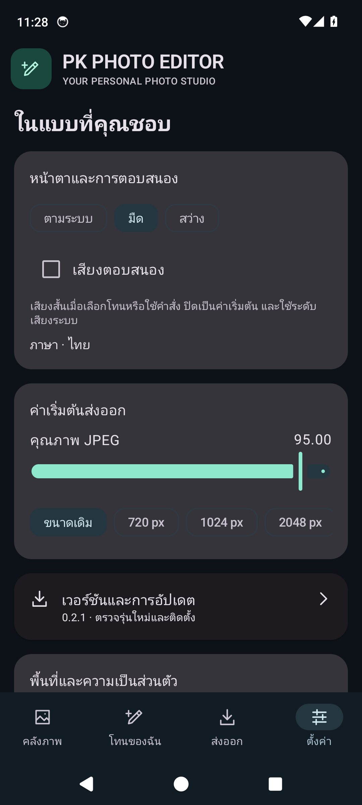

คุมแสงและสี
เลือกโทน ปรับความเข้ม และปรับแสง สี พร้อมรายละเอียดด้วยตัวเอง
YOUR POCKET PHOTO STUDIO
เก็บบรรยากาศที่คุณรู้สึกไว้ในทุกภาพ
แต่งแสง ปรับสี คุมโทน ได้อย่างอิสระบน Android

01 / THE STUDIO
เลือกรูปแล้วเข้าแต่งได้ทันที มีภาพตัวอย่างอยู่ตรงหน้า เปรียบเทียบต้นฉบับ ย้อนกลับ และทำซ้ำได้โดยไม่แก้ไฟล์ต้นฉบับ


ภาพหน้าจอจากแอปจริง ภาพประกอบสำหรับสาธิต ไม่มีภาพส่วนตัวของผู้ใช้
02 / CREATIVE CONTROL
จากภาพเดียวถึงทั้งชุด
ทำงานต่อได้ในจังหวะของคุณ
เลือกโทน ปรับความเข้ม และปรับแสง สี พร้อมรายละเอียดด้วยตัวเอง
Undo / Redo แยกแต่ละรูป สลับภาพก่อนหน้าและถัดไปได้จากหน้าแต่ง
นำสูตรแต่งไปใช้กับภาพที่เลือก แล้วส่งออก JPEG พร้อมเลือกขนาดและคุณภาพ
การแต่งภาพทำงานแบบออฟไลน์ เชื่อมต่อ GitHub เมื่อคุณกดตรวจสอบหรือดาวน์โหลดอัปเดต
03 / GET STARTED
สำหรับ Android 14 ขึ้นไป
ดาวน์โหลดโดยตรงจาก GitHub Releases
อนุญาตการติดตั้งจากแหล่งนี้ให้กับเบราว์เซอร์เมื่อ Android ขอ แล้วตรวจชื่อแอปก่อนติดตั้ง
เลือกภาพผ่าน Photo Picker ต้นฉบับจะถูกคัดลอกไว้ในพื้นที่ส่วนตัวของแอป
ไปที่ ตั้งค่า → ตรวจสอบอัปเดต แอปตรวจสอบไฟล์และลายเซ็นก่อนเปิดหน้าติดตั้งของ Android
GOOD TO KNOW
ใช่ รุ่น 0.2.1 เป็น APK สำหรับทดสอบ ใช้ debug signing เดิมเพื่ออัปเดตจากรุ่นก่อนหน้า ควรสำรองภาพที่ส่งออกแล้วก่อนเปลี่ยนเครื่องหรือถอนการติดตั้ง
ไม่มีการอัปโหลดรูปเพื่อแต่งภาพ รูปและสูตรแต่งจัดเก็บบนเครื่อง การตรวจสอบอัปเดตติดต่อ GitHub เพื่อรับข้อมูลเวอร์ชันและ APK เท่านั้น
ระบบแต่งและส่งออกปัจจุบันเป็น SDR JPEG ไม่ใช่กระบวนการพัฒนา RAW หรือส่งออก HDR
เปิด Issue บน GitHub พร้อมรุ่น Android และขั้นตอนที่พบปัญหา โปรดอย่าแนบภาพส่วนตัวหรือข้อมูลลับ